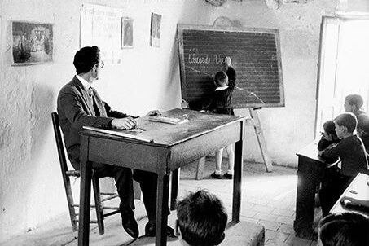

يا من عار !

استيقظ الراشد من نوم مع رجاء. كل يوم كان يلتقط الكتاب ويفحصه. هل هو جاف؟. كانت بعض الصفحات رطب. دعونا نفتح ببطء في يوم أو يومين. مع مرور الأيام ، نمت آماله. لقد مر أسبوع. انتهت إجازة والدتي. نأمل أن يكون قد التقط الكتاب من تحت الموقد. مرحبا ، إنه مجفف جيدا. شعرت بالرغبة في القفز من الفرح. لكن حوافها كانت مهترئة في بعض الأماكن. هل يقبلها محمد إذا أعطاها له؟ هل يوافق مدير المدرسة؟ على أي حال ، هذا كل ما يمكنني تقديمه لك. وهو هدأ
لم يطلب محمد كتابا بعد. لن يعطي مدير المدرسة شهادة انتقال إذا لم يتم إرجاعه. لذلك يسئلها. ماذا أفعل إذا سألت؟ ماذا سيكون رد فعله إذا أعطاه كتابا مجعدا؟ دعونا نجربها الآن.
في ذلك اليوم، لم ينس راشد التقاط كتاب عندما غادر إلى المدرسة. يجب العثور على محمد وحده. لا ترى أي شخص آخر. كان يبحث عن الفرصة.
هناك يأتي محمد. إنه وحيد. هذه الفرصة. ذهب إلى الأمام.
"محمد ، ألا تريد كتابك؟ سأل راشد.
"هل قرأت كله؟"
"نعم، قرأته"
جاء راشد إلى الصف مع محمد. ليس أحد هناك. إنه الوقت المناسب لإعطاء كتابا. فتح راشد الحقيبة بسرعة والتقط الكتاب واعطى محمد. تغير تعبيره عندما رأى الكتاب.
"أي كتاب هذا؟. هذا ليس ما أعطيتك إياه. تأخر صوت محمد.
"أنا آسف لأنها سقطت في الماء"، قال راشد معتذرا.
لكن محمد لم يستسلم. وضع رأسه على المكتب وبدأ في البكاء.
"محمد ، لا تبكي. دعونا نجبر المشكلة
لكن كانت صرخات محمد قد زادت. أصيب راشد بالذهول.
سيأتي جميع الأطفال الآن. بعدها ، سيأتي المعلمون أيضا. ستأتي المشكلة إلى مدير المدرسة. سيتم استجوابي. سرعان ما وضع الكتاب في حقيبته وجلس كمن لا يعرف شيئا.
دق الجرس. جاء الأطفال يركضون إلى الصف وهم يصرخون. عندما رأوا محمد يبكي، تجمعوا حوله.
"ما أصابك؟ لماذا تبكي؟" سألو.
لم اجاب محمد شيئا. أصبح البكاء أقوى.
"لماذا يبكي؟ سألوا لراشد.
"آه ... لا أعرف". مد راشد يده كمن لا يعرف.
ليس من العدل أن يقول إنه لا يعرف. هناك شيء خطير. وصلت المشكلة إلى مدير المدرسة. استدعى مدير المدرسة كليهما.
"ما المشكلة؟ لماذا تبكي؟" سأل مدير المدرسة.
"أخذ كتاب مكتبتي"، قال محمد ودهش راشد لما سمع اجابه.
"لم آخذها، أعطاها لي" قال راشد
"أصحيح؟ أأعطيته إياها؟" سأل مدير المدرسة.
هز محمد رأسه قائلا لا .
ارتجف مدير المدرسة من الغضب.
"ماذا قلت؟ أعطاك إياها؟" فرك أذن راشد بقوة.
يتلوى من الألم.
"يا استاذ ، انه اعطى له..." فجأة، جاء رجل للإنقاذ.
من هذا؟ نظر راشد. شامير وغفور يقفان عند الباب. هناك أشخاص لديهم الشجاعة لقول الحقيقة. شعر راشد بالارتياح.
"من قال لك؟" قال مدير المدرسة
"لقد رأينا ذلك ..."
"وأين الكتاب؟" سأل.
دخل راشد إلى الصف لالتقاط الكتاب. ضحك الأطفال عندما رأوا الكتاب الذي أخرجه من الحقيبة. هل هذا هو الكتاب؟ كم كان جميلا. محمد لم يبكي من أجل لا شيء.
جاء رلشد أمام مدير المدرسة بكتابه.
"لما كتابا لك؟" سأل ناظرا إلى الكتاب الذي أحضره.
"افعل شيئا ، أعطه الكتاب الذي أخذته. عليك أن تجلب ضعف السعر".
"سأعطيها لك."
"متى؟"
"الآن."
حسنا، هرب من هناك ما استطاع. لم يستطع راشد رفع رأسه بسبب ثقل الإذلال. جلس ورأسه لأسفل في الصف.
يا من عار !
كان كل خطأي. كل بسبب حب غاية لكتابي. دعوني اترك رغبتنا المفرطة في كتب. لذلك قررت أن أعيش كوحد دون أن أشكو لأي شخص. جاء محمد أمامه وقال:
"راشد، بالنسبة لي، كتابي يكفي. سأدفع ضعف الثمن".
لكنه لم يرفع رأسه خجلا. في تلك اللحظة ، جاء شمير وغفور بكتاب جديد وهدأوه. وأعطوا كتبا أخرى لراشد، وهو عاشق للكتب. عندما رأى الكتاب ، كان سعيدا. لقد فهم أن الأصدقاء الحقيقيين هم أولئك الذين وقفوا إلى جانبه لإنقاذه من الخطر.